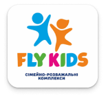

(вул. Газова, 20):
канатний парк, батутна зона, аерохокей. Для діток ВПО безкоштовний одноразовий вхід з вівторка по п’ятницю до 12:00
Яскраве місце для відпочинку та розваг – більш ніж 15 ігрових зон (батути, лабіринт, мотузкове містечко, зона для малюків до 5 років, місто професій, інтерактив та інші).
Адреса:
Львів, вул. Стрийська 45. ТЦ «ЛАЗ 695»
тел.: +38(095)120-99-75 та +38(095)121-01-49
Для дітей військовослужбовців діє знижка 20 % від вартості квитка при наявності посвідчення встановленого зразка та свідоцтва про народження дитини (може бути надана копія)
KIDландія :
вул. Мельника, 18
Графік роботи:
понеділок-п’ятниця 15:00-21:00 400 грн
субота-неділя 10:00-21:00 500 грн
Контактний телефон: +38 067 97 00 808
Kigurumi park :
ул. Мельника, 18
Графік роботи та вартість:
понеділок-п’ятниця 12:00 - 21:00 - 300 грн
субота-неділя 10:00-21:00 - 350 грн
(вул. Крушельницької) м. Львів, вул. Соломії Крушельницької, 11
Допомога жінкам та дітям у складних життєвих обставинах
Допомога ВПО
Психологічна допомога
Допомога сім'ям військових
Послуги, які надаються в точці:
💡 Інформаційні послуги 🧶 Ігри та заняття із дітьми 👩🎨 Майстер-клас для дітей ☀️ Точка обігріву ☕️ Гарячі напої 🧸 Психологічна допомога. ⏳ Розклад роботи точки: 📅 Пн-Нд 🕘 10:00-20:00 БЕЗ ВИХІДНИХ
вул. В. Великого, 14А, парк «Горіховий Гай»,
Film Centr
проводяться майстерні, кінопокази. Є ігрова зона, куди можна прийти з дитиною.

FLY KIDS
вул. Патона, 37 (ТЦ «АРСЕН») | понеділок 12:00-21:00 | вівторок - неділя 10:00- 21:00
Контактний телефон: +38 068 02 92 929
с. Сокільники, вул. Стрийська, 30 (ТРЦ «KING CROSS LEOPOLIS»)
понеділок 12:00-21:00 | вівторок - неділя 10:00-21:00
Контактний телефон: +38 067 31 52 278
У комплексах Fly Kids діти, чиї батьки на теперішній час виконують військовий обов’язок (ЗСУ, ТРО, НГУ)
або мають статус УБД з 2014 року, отримують знижку -50% на вхід у комплекс з понеділка по п’ятницю
Також акція розповсюджується на дітей, чиї батьки знаходяться у шпиталі або проходять реабілітацію,
вважаються безвісти зниклими, загиблими під час виконання бойових дій, перебувають у полоні чи отримали інвалідність внаслідок війни.
Акція діє за умови пред'явлення оригіналу або копії підтверджуючих документів та свідоцтва про народження дітей.
Присутність батьків, які проходять службу, необов'язкова.